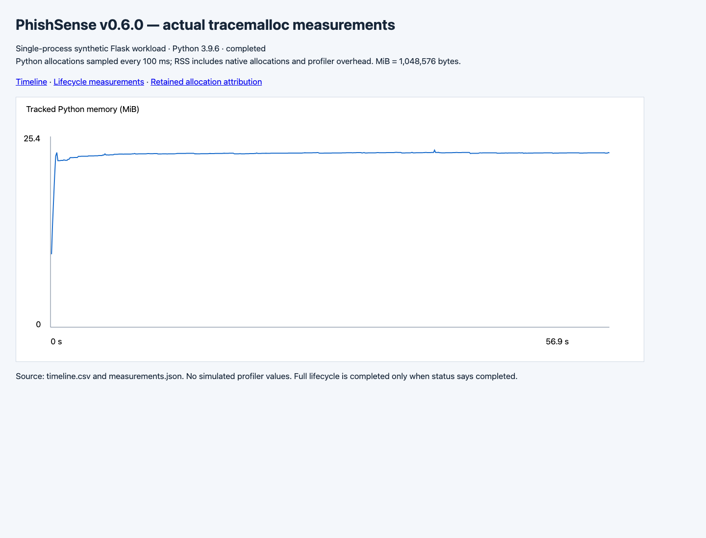
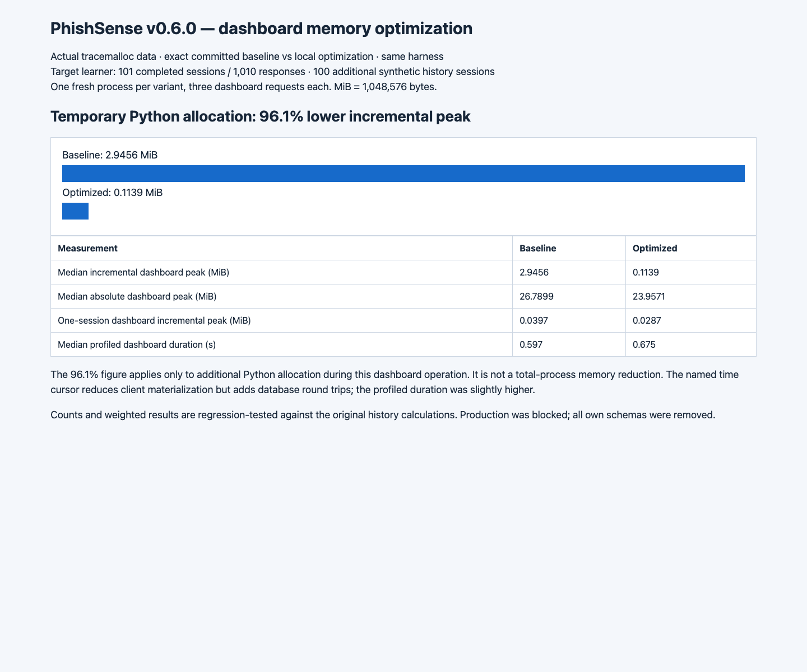
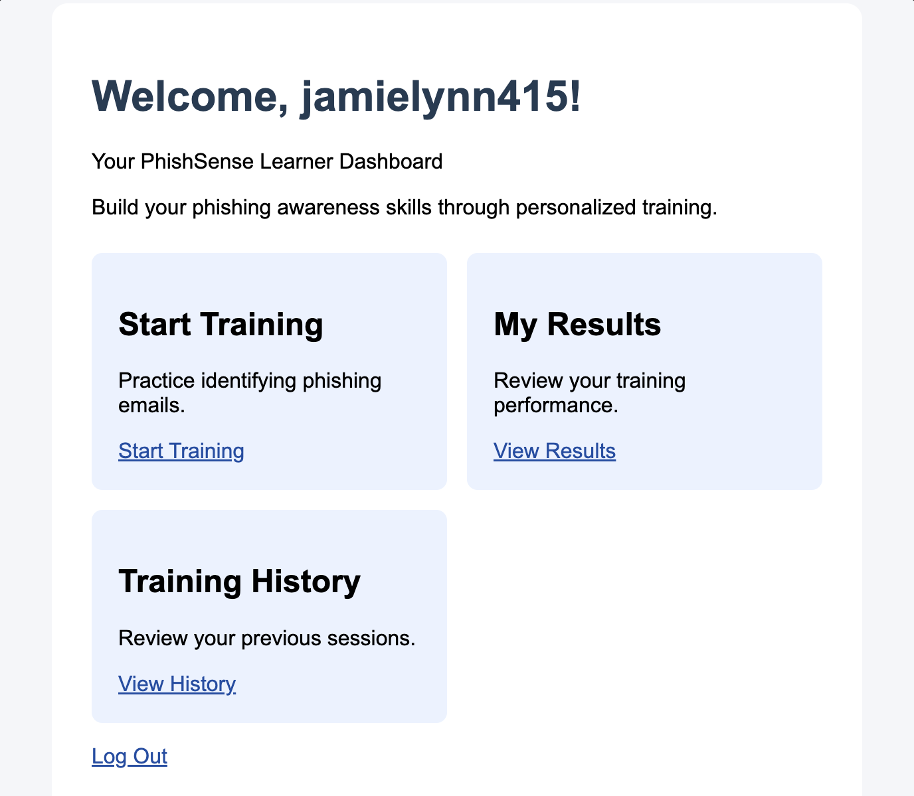

Testing, Optimizing, and Refining PhishSense
Author: Jamie Alexander
Date: November 22, 2026
Project: PhishSense: Adaptive Phishing Awareness Training System
November was a busy and challenging month for my master's capstone project, PhishSense. After establishing the application's foundation in October, my focus shifted toward developing and refining its training functionality, evaluating usability, and examining application performance.
My primary goal was to make PhishSense more functional, reliable, and user friendly. This involved improving the training experience, collecting feedback from testers, and using actual performance measurements to identify areas for optimization.
Although balancing development with my personal responsibilities was challenging, I made meaningful progress toward preparing PhishSense for the next phase of my capstone project.
Monthly Development Goals
My main objective for November was to continue developing PhishSense beyond its initial application structure and evaluate how well the system performed during realistic training workflows.
I wanted to ensure that participants could navigate the application independently, complete simulated phishing exercises, understand the feedback they received, and review their performance.
I also wanted to identify technical inefficiencies before moving further into the research phase. Memory consumption became a particular focus because participant training histories will continue growing as more sessions are completed.
Features Developed and Refined
1. Interactive Phishing Training
I continued refining the simulated phishing training experience. PhishSense presents participants with legitimate and phishing emails and asks them to classify each message.
Participants receive educational feedback explaining the indicators associated with each email. Their responses contribute to performance tracking and help identify areas where additional training may be beneficial.
2. Adaptive and Nonadaptive Training
PhishSense supports two training conditions. The adaptive condition adjusts difficulty based on participant performance after a block of five responses. The nonadaptive condition follows a predetermined difficulty schedule.
These conditions support my broader capstone research goal of evaluating whether adaptive training produces different phishing recognition outcomes than a fixed training approach.
3. Dashboard and Performance Tracking
I continued improving the learner dashboard, which provides access to training activities, results, mistake patterns, and training history.
The dashboard is an important part of PhishSense because it allows participants to review their progress and better understand their performance across completed training sessions.
4. Dashboard Memory Optimization
One of the most significant technical improvements this month involved reducing unnecessary memory allocations during dashboard loading.
The original implementation retrieved complete training histories when calculating dashboard statistics. After profiling the application, I implemented a targeted optimization that retrieves summary statistics and streams response times instead.
The controlled comparison showed that median incremental dashboard memory allocation decreased from 2.9456 MiB to 0.1139 MiB. This represents a 96.1% reduction in temporary Python memory allocation during the measured dashboard operation.
The optimization did not establish a reduction in retained memory or improve execution speed. However, it demonstrated how profiling data can guide a focused technical improvement.
Performance Testing and Results
I used Python's built-in tracemalloc profiler to examine memory allocations during representative PhishSense workflows. These included authentication, dashboard access, training sessions, results retrieval, and repeated history reads.
Testing was conducted in an isolated local environment using Python, Flask, and a PostgreSQL database. Production connections were blocked during the profiling process.
The original memory measurements showed that Python memory usage increased during application initialization and then remained relatively stable throughout the measured training workflow. No persistent memory leak was established under the tested conditions.

To evaluate the dashboard optimization, I compared the original PhishSense v0.6.0 implementation with the optimized version. The measured learner had 101 completed sessions and 1,010 responses.
The optimization substantially reduced temporary dashboard allocations. However, the profiled dashboard duration increased slightly from 0.597 seconds to 0.675 seconds. These results highlighted the importance of considering both memory efficiency and execution time.

I also performed regression testing to check that the optimization preserved existing functionality. The validation included 25 targeted regression cases and 105 offline test cases, with some overlap between the two groups.
Usability Testing and Feedback
Another important goal this month was evaluating how people interacted with PhishSense. Four testers provided structured feedback on the application.
Their responses helped identify strengths in navigation, independent use, and educational feedback, while highlighting opportunities to improve email realism, instructional clarity, and the overall user experience.
The usability ratings produced an overall average of 4.20 out of 5. Navigation and independent use both received average ratings of 5.00, while educational feedback received an average of 4.75.
Email realism received the lowest average rating at 2.75. Testers suggested providing more background information about the fictional Evercrest Group organization and improving the appearance and context of simulated workplace emails.
Feedback also identified opportunities to make the logout function easier to locate and to provide additional educational interaction within the training experience.
This preliminary feedback provided useful direction for future development. The broader capstone research evaluation remains separate from these initial usability observations.

Development Tools and Resources
Several technologies and tools supported development and testing throughout November.
- Python: Application development and performance profiling.
- Flask: Web application routing and training workflows.
- PostgreSQL and Supabase: Application data storage and retrieval.
- HTML and CSS: Application interface design and presentation.
- Visual Studio Code: Development, debugging, and testing.
- Git and GitHub: Version control and project documentation.
- Python tracemalloc: Memory allocation profiling and comparison.
Challenges Encountered
One technical challenge was determining how to reduce dashboard memory usage without affecting the accuracy of performance statistics or historical training data.
Addressing this required examining profiling results, identifying unnecessary allocations, implementing a targeted change, and comparing the results against the original application.
Usability testing also revealed areas that still need attention. Although testers generally found the application easy to navigate, the simulated emails need additional realism and organizational context.
My biggest challenge, however, was balancing schoolwork and software development with my responsibilities outside of school.
As a mother of four children with a house full of animals, I often have very little uninterrupted time to dedicate to my capstone project. Between parenting, caring for my animals, working, and managing everyday responsibilities, I have frequently felt exhausted.
There were days when finding the motivation to sit down and work on PhishSense was difficult, even though completing this project remains important to me.
Monthly Retrospective
What Went Well?
I made significant progress in evaluating and refining PhishSense. Completing memory profiling, implementing a measurable dashboard optimization, and collecting usability feedback gave me a clearer understanding of the application's strengths and weaknesses.
I am particularly proud that the memory optimization was supported by actual measurements rather than assumptions. Seeing a 96.1% reduction in temporary dashboard allocation demonstrated the value of systematic testing.
What Could Have Gone Better?
Time management was my biggest struggle this month. I am a mother of four with a house full of animals, and balancing everyone's needs with work and graduate school can be exhausting.
Some days I simply did not have the energy or motivation to work on my capstone after taking care of everything else.
I would have liked to spend more uninterrupted time on development, but family obligations often required me to adjust my plans. This sometimes made progress feel slower than I wanted.
How Will I Improve Moving Forward?
Moving forward, I want to set smaller, more realistic development goals and take better advantage of the time I do have available.
Instead of expecting myself to complete large tasks in one sitting, I plan to break them into manageable steps that fit around my family and work schedule.
I also want to continue using performance measurements, usability feedback, and advisor guidance to make informed development decisions.
Looking Ahead
November helped me move PhishSense beyond its initial development stage and toward a more thoroughly evaluated application.
My next priorities include improving simulated email realism, adding more organizational context, refining navigation, and continuing to evaluate performance as the application grows.
I also plan to explore safe simulated link inspection and additional training interactions in future development milestones.
Although this month was exhausting, I am proud of the progress I made. Balancing graduate school with family life is not always easy, but each completed milestone brings me closer to finishing my master's degree and PhishSense.
Back to Portfolio